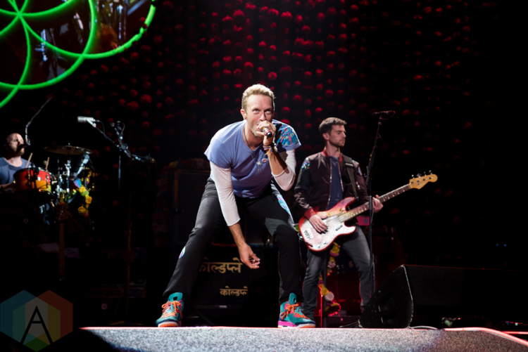

History
 Coldplay is a British rock band formed in 1996 by lead singerand pianist Chris Martin andlead guitarist Jonny Buckland at University College London (UCL). After they formed under the name Pectoralz, Guy Berryman joined the group as bassist and they changed their name to Starfish. Will Champion joined as drummer and backing vocalist, completingthe lineup. Creative director and former manager Phil Harvey is often referred to as the fifth member by the band. The band renamed themselves "Coldplay" in 1998, before recording and releasing three EPs: Safety in 1998 and Brothers & Sisters and The Blue Room in 1999. The Blue Room was their first release on a major label, after signingto Parlophone.
Music
Coldplay's musical style has generally been regarded as alternative rock,pop rock, post-Britpop,and pop. Chris Martinonce proclaimed the band's music as "limestone rock" in comparison to"hard rock". The band's music has been called "meditative" and "blue romantic"; it "reflects on their emotions" and Martin "endlessly examines his feelings". Coldplay started out as one of many earnest post-Britpop bands. In the late 1990s, the EPs released by the band had characteristics of dream pop, setting them apart from later studio albums.
Coldplay achieved worldwide fame with the release of the song "Yellow" in 2000, followed in the same year by their debut album Parachutes, which was nominated for the Mercury Prize. The band's second album, A Rush of Blood to the Head (2002), was released to critical acclaim and won awards including NME's Album of the Year. Their next release, X&Y, the best-selling album worldwide in 2005, received mostly positive reviews, though some critics felt it was inferior to its predecessor. Their fourth studio album, Viva la Vida or Death and All His Friends (2008), the best-selling album worldwide of 2008, was produced by Brian Eno and released to largely positive reviews, earning three Grammy Awards. In October 2011, Coldplay released their fifth studio album, Mylo Xyloto, which topped the charts in over 34 countries, was the UK's best-selling rock album of 2011, and received mixed to positive reviews.[5] In May 2014, they released their sixth album, Ghost Stories, which also received mixed to positive reviews and topped several national album charts. In December 2015, the band released their seventh album, A Head Full of Dreams, which reached the top two in most major markets, but received generally mixed reviews.
Details
Members
- Chris Martin (lead vocals, rhythm guitar, piano, keyeboards, synthesizers, harmonica)
- Jonny Buckland (lead guitar, backing vocals, piano, keyboards)
- Guy Berryman (bass, backing vocals, keyboards, synthesizers)
- Will Champion (drums, percussion, backing vocals, guitar, piano keyboards)
Background
- Origin: London, England
-
Genres:
- Alternative Rock
- Pop Rock
- post-Britpop
- Pop
- Years active: 1996–present
-
Labels:
- Parlophone
- Capitol
- Atlantic
Charity works
- In the band's early years, Coldplay was known to give 10% of their profits to charity.
- Coldplay teamed up with REM’s Michael Stipe for a charity single to continue aid for Hurricane Katrina victims; proceeds benefit Mercy Corps. The CD, In the Sun, is available for purchase on iTunes.
- The band has donated items for auctions benefiting Cancer Active and Kids Company, and for several years they have supported Kids Company further by donating proceeds from their Under 1 Roof charity concerts. Chris Martin said of the concerts: “Buying a ticket to this concert will guarantee two things: a totally unique never-to-be-repeated night of star-spangled entertainment, and money in the Christmas coffers of a charity that brings love and happiness to London’s most vulnerable kids.”
- Coldplay are vocal supporters of Amnesty International, and were filmed for Make Poverty History's Click campaign.
- The band asks that any gifts intended for them are instead donated to charity.